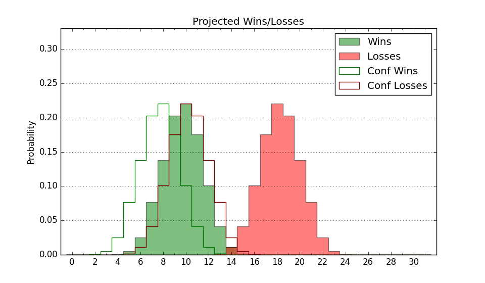

| Home | Game Probabilities | Conferences | Preseason Predictions | Odds Charts | NCAA Tournament |
| City: | Hammond, Louisiana | |
| Conference: | Southland (9th)
| |
| Record: | 1-4 (Conf) 3-12 (Overall) | |
| Ratings: | Comp.: -12.9 (303rd) Net: -13.9 (306th) Off: 96.1 (306th) Def: 110.0 (280th) SoR: 0.0 (181st) |
| Remaining | ||||||
|---|---|---|---|---|---|---|
| Date | Opponent | Win Prob | Pred. | |||
| 1/22 | Northwestern St. (341) | 77.0% | W 74-65 | |||
| 1/27 | @ Lamar (271) | 27.4% | L 69-75 | |||
| 1/29 | @ Houston Baptist (347) | 54.9% | W 71-69 | |||
| 2/3 | McNeese St. (96) | 18.0% | L 62-72 | |||
| 2/5 | Incarnate Word (339) | 75.9% | W 74-66 | |||
| 2/10 | @ Northwestern St. (341) | 49.6% | L 69-70 | |||
| 2/12 | @ Texas A&M Commerce (304) | 35.4% | L 62-66 | |||
| 2/17 | Houston Baptist (347) | 80.6% | W 75-65 | |||
| 2/19 | Lamar (271) | 56.3% | W 73-71 | |||
| 2/24 | New Orleans (327) | 73.2% | W 75-68 | |||
| 3/2 | @ Tex A&M Corpus Chris (260) | 25.0% | L 64-72 | |||
| 3/4 | @ Incarnate Word (339) | 48.1% | L 69-70 | |||
| 3/6 | Nicholls St. (238) | 48.7% | L 67-68 | |||
| Previous | Game Score | |||||
| Date | Opponent | Win Prob | Result | Off | Def | Net |
| 11/10 | @Auburn (7) | 0.9% | L 71-86 | 17.7 | 15.2 | 32.9 |
| 11/15 | @BYU (5) | 0.8% | L 48-105 | -16.2 | -14.0 | -30.3 |
| 11/18 | @Santa Clara (111) | 7.4% | L 63-65 | 4.3 | 17.3 | 21.7 |
| 11/24 | (N) Western Michigan (265) | 39.3% | L 67-68 | -6.1 | 6.6 | 0.5 |
| 11/25 | (N) Tennessee St. (264) | 38.9% | L 77-91 | 6.5 | -19.7 | -13.2 |
| 12/1 | @LSU (88) | 5.5% | L 66-73 | 10.3 | 5.9 | 16.2 |
| 12/9 | @Southern (236) | 21.5% | L 44-69 | -29.7 | 1.4 | -28.2 |
| 12/12 | @Louisiana Tech (78) | 4.9% | L 60-89 | -4.3 | -6.5 | -10.8 |
| 12/16 | @Murray St. (141) | 10.9% | W 61-55 | 13.7 | 13.5 | 27.2 |
| 12/20 | Grambling St. (310) | 66.6% | W 48-47 | -16.7 | 13.2 | -3.6 |
| 1/6 | @New Orleans (327) | 44.5% | W 73-68 | 13.5 | -4.4 | 9.1 |
| 1/9 | @Nicholls St. (238) | 21.8% | L 61-66 | -1.8 | 1.0 | -0.8 |
| 1/13 | @McNeese St. (96) | 6.1% | L 65-74 | 14.6 | -1.8 | 12.8 |
| 1/15 | Tex A&M Corpus Chris (260) | 53.2% | L 68-73 | 5.8 | -11.3 | -5.5 |
| 1/20 | Texas A&M Commerce (304) | 65.1% | L 52-68 | -17.9 | -13.9 | -31.8 |
| Stats & Trends | |||||
|---|---|---|---|---|---|
| Current | Day | Week | Month | Season | |
| Composite | -12.9 | -2.2 | -2.5 | +0.2 | -6.2 |
| Comp Rank | 303 | -18 | -21 | +1 | -71 |
| Net Efficiency | -13.9 | -2.4 | -2.7 | +1.6 | -- |
| Net Rank | 306 | -16 | -21 | +10 | -- |
| Off Efficiency | 96.1 | -1.1 | -0.6 | +3.9 | -- |
| Off Rank | 306 | -11 | -7 | +22 | -- |
| Def Efficiency | 110.0 | -1.3 | -2.1 | -2.3 | -- |
| Def Rank | 280 | -13 | -23 | -14 | -- |
| SoS Rank | 93 | -37 | -63 | -42 | -- |
| Exp. Wins | 9.7 | -1.5 | -2.2 | -1.1 | -6.0 |
| Exp. Conf Wins | 7.7 | -1.5 | -2.2 | -1.1 | -4.7 |
| Conf Champ Prob | 0.0 | -0.2 | -1.2 | -1.9 | -42.6 |

| Advanced Stats | ||
|---|---|---|
| Stat | Value | Rank |
| Off Eff FG % | 0.458 | 314 |
| Off Ast Ratio | 0.143 | 160 |
| Off ORB% | 0.291 | 133 |
| Off TO Rate | 0.171 | 316 |
| Off FT Ratio | 0.299 | 252 |
| Def Eff FG % | 0.544 | 319 |
| Def Ast Ratio | 0.184 | 359 |
| Def ORB% | 0.294 | 243 |
| Def TO Rate | 0.150 | 162 |
| Def FT Ratio | 0.301 | 115 |